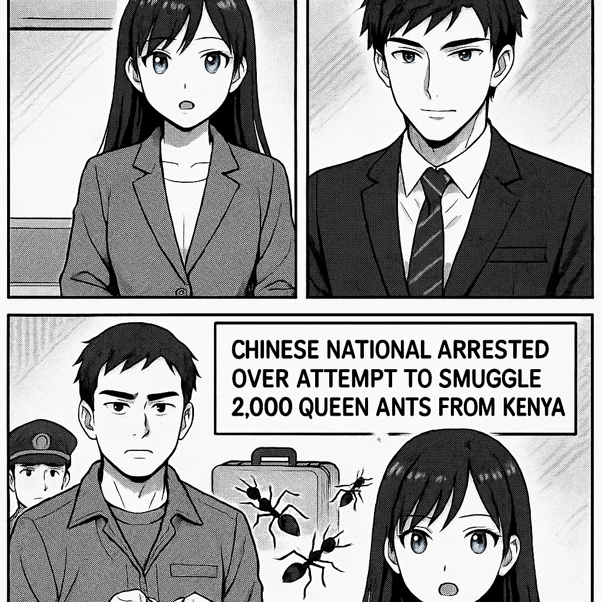

こんにちは、ミライです！今日は、とてもユニークなニュースをわかりやすくお伝えしますね。 中国国籍の人が、ケニアから「女王アリ」を2000匹もこっそり持ち出そうとして逮捕されました。 どうやって隠したかと言うと、一部のアリは試験管に入れて運んでいたり、他のアリはトイレットペーパーの芯の中に隠していたそうです。 この「女王アリ」は、自然の中でとても大事な存在なので、勝手に国をまたいで持ち出すことは法律で禁止されています。 つまり、自然や生態系を守るためのルールを破ったとして捕まったんですね。 ミライでした！

ソウマです。今回の事件は、中国人がケニアから約2,000匹の女王アリを密輸しようとしたもので、希少な生物資源の不正取引を示しています。女王アリは生態系や養蜂業に影響を与えるため、多くの国で輸出入が厳しく規制されています。この摘発は、生物多様性保護と国際的な環境法の強化の重要性を改めて浮き彫りにしています。今後も生物資源の管理は国際関係における焦点となるでしょう。
トップへ戻る